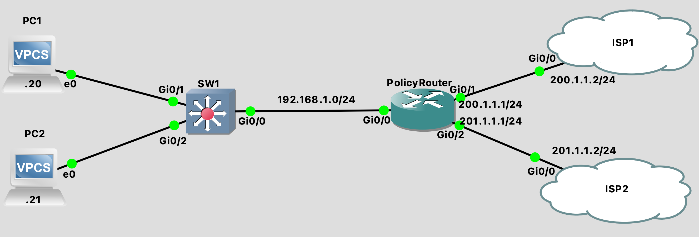

Path Control¶
What is Policy Routing?¶
Policy Routing: The ‘Programming Language’ of routing tables
_docs/path-control.zip
SW1
SW1(config)#ip default-gateway 192.168.1.1
SW1(config)#int g0/0
SW1(config-if)#switchport trunk encap dot1q
SW1(config-if)#switchport mode trunk
SW1(config-if)#no shut
ISP1
ISP1(config)#ip route 192.168.1.0 255.255.255.0 g0/0
ISP1(config)#int g0/0
ISP1(config-if)#ip add 200.1.1.2 255.255.255.0
ISP1(config-if)#no shut
ISP2
ISP2(config)#ip route 192.168.1.0 255.255.255.0 g0/0
ISP2(config)#int g0/0
ISP2(config-if)#ip add 201.1.1.2 255.255.255.0
ISP2(config-if)#no shut
ISP2(config-if)#do wr
PolicyRouter
PolicyRouter(config)#int g0/0
PolicyRouter(config-if)#ip add 192.168.1.1 255.255.255.0
PolicyRouter(config-if)#no shut
PolicyRouter(config-if)#int g0/1
PolicyRouter(config-if)#ip add 200.1.1.1 255.255.255.0
PolicyRouter(config-if)#no shut
PolicyRouter(config-if)#int g0/2
PolicyRouter(config-if)#ip add 201.1.1.1 255.255.255.0
PolicyRouter(config-if)#no shut
PolicyRouter(config-if)#
PolicyRouter(config-if)#ip access-list extended CLIENT1
PolicyRouter(config-ext-nacl)#permit ip host 192.168.1.20 any
PolicyRouter(config-ext-nacl)#exit
PolicyRouter(config-if)#ip access-list extended CLIENT2
PolicyRouter(config-ext-nacl)#permit tcp host 192.168.1.21 any eq 443
PolicyRouter(config-ext-nacl)#permit tcp host 192.168.1.21 any eq 23
PolicyRouter(config-ext-nacl)#exit
PolicyRouter(config)#route-map POLICY 10
PolicyRouter(config-route-map)#match ip address CLIENT1
PolicyRouter(config-route-map)#set ip next-hop 201.1.1.2
PolicyRouter(config-route-map)#route-map POLICY 20
PolicyRouter(config-route-map)#match ip address CLIENT2
PolicyRouter(config-route-map)#set ip next-hop 200.1.1.2
PolicyRouter(config)#route-map POLICY permit 30
PolicyRouter(config-route-map)#set ip next-hop 201.1.1.2
PolicyRouter(config)#int g0/0
PolicyRouter(config-if)#ip policy route-map POLICY
PolicyRouter#sh route-map
route-map POLICY, permit, sequence 10
Match clauses:
ip address (access-lists): CLIENT1
Set clauses:
ip next-hop 201.1.1.2
Policy routing matches: 0 packets, 0 bytes
route-map POLICY, permit, sequence 20
Match clauses:
ip address (access-lists): CLIENT2
Set clauses:
ip next-hop 200.1.1.2
Policy routing matches: 0 packets, 0 bytes
route-map POLICY, permit, sequence 30
Match clauses:
Set clauses:
ip next-hop 201.1.1.2
Policy routing matches: 0 packets, 0 bytes